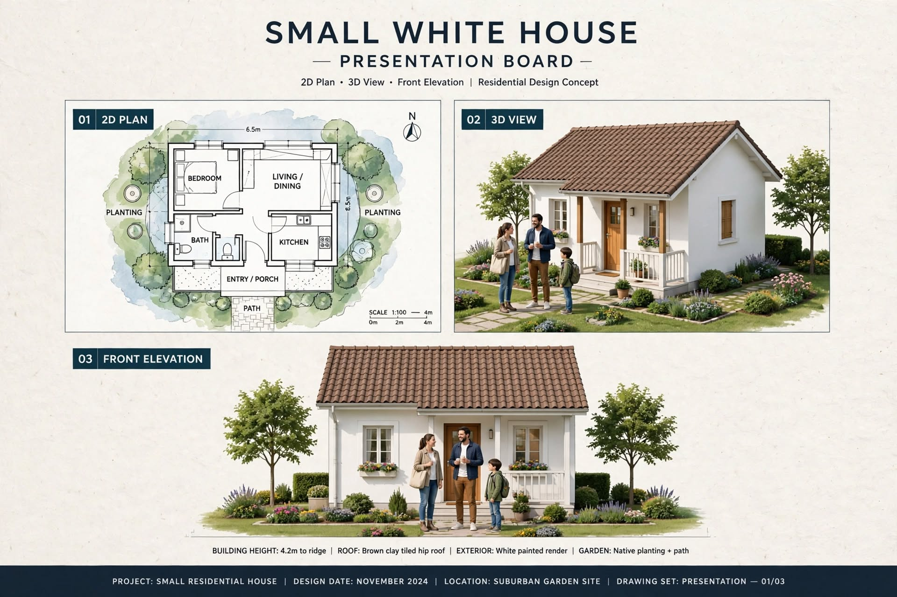

SMALL HOUSE PLANS · ARTICLE 10
Small White One-Bedroom House with a Brown Tiled Roof
A simple one-bedroom small-home concept with a front porch, compact living space and traditional pitched roof.

This guide reviews the supplied image as a design concept. It separates what is visibly stated in the drawing from items that still need professional measurement and confirmation.
1. Compact One-Bedroom Layout
This concept is arranged around one bedroom, a combined living/dining zone, a separate kitchen, a bathroom and an entry porch. The plan is surrounded by planting and a simple garden path. A one-bedroom arrangement can suit a couple, a small household, a guest cottage or a compact secondary dwelling where local rules permit.
2. Space Planning
The drawing does not label individual room dimensions. For that reason, no room sizes should be assumed from the illustration. Begin with the actual furniture requirements: bed size, wardrobe, sofa, dining table, kitchen appliances and bathroom fixtures. Place these items on a scaled drawing, then adjust the room boundaries to preserve comfortable circulation and access to windows.
3. Bedroom Privacy and Storage
Keep the bedroom away from the main entrance where possible. Plan a double bed with a wardrobe on a wall that does not block the window. Check the door swing and allow enough clearance to make the bed and open storage. If the room is intended for long-term use, consider a small linen cupboard or overhead storage only where ceiling height and ventilation remain suitable.
4. Living, Dining and Kitchen
The combined living/dining area should have a clear path from the porch to the bedroom and bathroom. Choose compact furniture rather than oversized sofas. A separate kitchen can contain a straight or L-shaped counter, but its final layout depends on the actual room dimensions and opening locations. Plan the sink, preparation area, cooktop, refrigerator and storage before selecting cabinets.
5. Roof and Exterior
The 3D exterior shows white walls, a brown tiled pitched roof and a small covered porch. A pitched roof can complement a village or suburban setting and help shed rain when gutters and downpipes are correctly designed. Confirm the roof structure, pitch, underlay, flashing and wind connections with a qualified professional. Native planting and a simple paved path can keep the garden attractive without demanding extensive maintenance.
Construction, Services and Budget Planning
Before construction, confirm the site boundaries, access, levels, soil conditions and approval requirements. A qualified local professional should prepare the measured architectural and structural drawings. The normal sequence is setting out, foundations, floor and wall construction, roof installation, first-fix plumbing and electrical work, plastering, waterproofing, doors and windows, finishes, testing and final inspection.
Prepare a project-specific bill of quantities rather than relying on a generic online price. Include excavation, concrete, reinforcement, blocks or bricks, roof materials, doors, windows, plumbing, electrical work, waterproofing, flooring, paint, labour, transport, approvals and a contingency. Actual costs in Sri Lanka vary by district, access, soil, specification, supplier and quotation date.
Important Professional Checks
- Verify all external and internal dimensions on a scaled drawing.
- Coordinate door swings, window openings, furniture clearances and circulation.
- Have foundation, columns, beams, lintels and roof structure designed for the site.
- Plan safe electrical circuits, earthing, water supply, drainage and ventilation.
- Check local planning rules, setbacks, approvals and applicable building standards.
Disclaimer: This article explains an illustrative design concept. It is not an architectural, structural, engineering or cost-certified document and must not be used alone for construction.